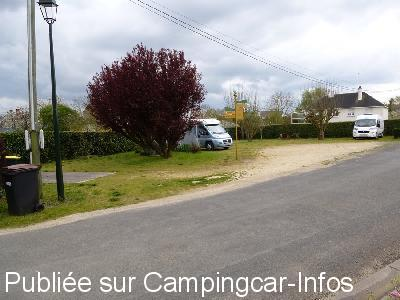
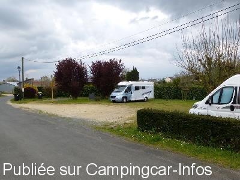
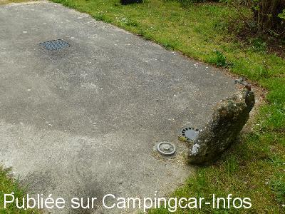
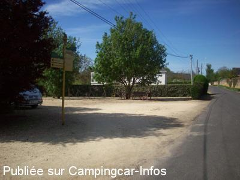

ASN = Aire de services avec stationnement nuit possible de :
AUBIGNÉ SUR LAYON
(N° 357)
Accès/adresse :
Rue du 19 Mars 1962
49540 AUBIGNÉ SUR LAYON
49540 AUBIGNÉ SUR LAYON
Latitude : (Nord) 47.21167° Décimaux ou 47° 12′ 42′′
Longitude : (Ouest) -0.46383° Décimaux ou 0° 27′ 49′′
Tarif : Gratuit
Type de borne : Autre
Services :


Restaurant
Autres informations :
Ouverte toute l'année
3 emplacements sur aire municipale
Borne non accessible en période de gel
Tel mairie : +33(0)241 594 019
http://www.aubignesurlayon.fr

Le 17/04/2016 par Papapi AC

Le 17/04/2016 par Papapi AC

Le 17/04/2016 par Papapi AC

Le 08/05/2010 par TONY16
de
CORNIC Alain
le 17/04/2016 :
Aire très propre. Calme assuré. Pas de commerce si ce n'est des viticulteurs. 4 CC le 16 avril. La balade dans Aubigné sur Layon s'impose. Merci à la commune
Aire très propre. Calme assuré. Pas de commerce si ce n'est des viticulteurs. 4 CC le 16 avril. La balade dans Aubigné sur Layon s'impose. Merci à la commune
de
chouchou49
le 17/01/2012 :
Bonjour,
Je suis passé voir cette aire ce WE 17/01/12, elle est en hivernage et semble un peu delaissée. (Grille de la fausse eau grise cassé, remplie de cochonerie. J'ai cherché veinement le point de vidange des eaux noires (peut être même point que les eaux grises ou devant le point d'eau de remplissage. Aubigné est un lieu trés touristique aux beaux jours. Cela mériterait un petit rafraîchissement, de plus avec la végétation ne pas compter mettre plus de 3 CCs!
Village trés interessant à voir mais dans l'action là c'était "mort de chez mort"
Bonjour,
Je suis passé voir cette aire ce WE 17/01/12, elle est en hivernage et semble un peu delaissée. (Grille de la fausse eau grise cassé, remplie de cochonerie. J'ai cherché veinement le point de vidange des eaux noires (peut être même point que les eaux grises ou devant le point d'eau de remplissage. Aubigné est un lieu trés touristique aux beaux jours. Cela mériterait un petit rafraîchissement, de plus avec la végétation ne pas compter mettre plus de 3 CCs!
Village trés interessant à voir mais dans l'action là c'était "mort de chez mort"
de
piocel
le 01/09/2003 :
Coin très calme, pour 3 CC maxi. Installation très simple mais suffisante. Pour le plein de Coteau du Layon, il n'y a pas de problème.
Visiter l'église pour ses peintures en trompe l'oeil.
Coin très calme, pour 3 CC maxi. Installation très simple mais suffisante. Pour le plein de Coteau du Layon, il n'y a pas de problème.
Visiter l'église pour ses peintures en trompe l'oeil.